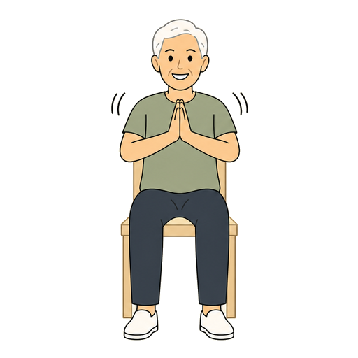
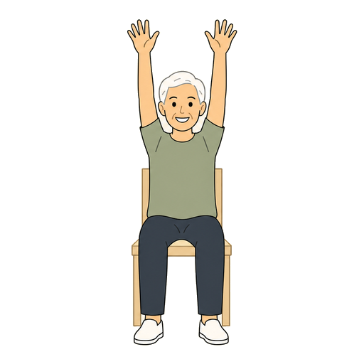

這個遊戲需要透過本機伺服器開啟，瀏覽器才允許使用鏡頭與載入程式模組。
直接雙擊 HTML（file://）會被瀏覽器擋住，畫面就會像現在這樣沒有反應。
正確開法：回到「節奏律動」資料夾，雙擊 🎵 開始玩.command，瀏覽器會自動打開遊戲。
若電腦已經在跑伺服器，也可以直接點：
http://localhost:8795/節奏律動/index.html
可能原因：網路不通（需要連線下載動作辨識模型），或程式檔案不完整。
跟著音樂做動作。音符會從右邊流過來，撞到左邊那個圈的瞬間就做出動作。


兩個動作都坐著完成，坐輪椅也可以玩。單手做得到的也算分，左右差異會記在結算報表裡。
圓點的顏色就是音符在軌道上的顏色。
開鏡頭偵測你的動作，結束後有復能報表。第一次玩會先做 30 秒暖身校正。
★ 依實際譜面統計：指令密度、最密集處的間隔、動作切換頻率與曲長。
做錯動作會扣分並中斷連擊；連擊滿 5 次就有 ×1.5 加成，之後每 10 次升一級，最高 ×3；
畫面上方的量表填到 80% 就過關；結算會記進排行榜。
重度個案建議關閉——關掉就完全沒有負面回饋與競爭，只記錄不扣分、也不上榜。
| 總分 | 最長連續跟上 | ||
|---|---|---|---|
| 🏁 過關量表 | 連擊加成 | ||
| 跟上比例 | 平均反應偏移 | ||
| 剛剛好 / 太快 / 太慢 | 節奏傾向 | ||
| ⚡ 連拍總數 | 做錯動作 |